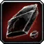
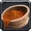

En bref
Tous les matériaux demandés par les recettes de métier de Forever — 589 au total — rangés en 9 familles. Pour chacun : où le trouver (fabrication, vendeur, butin observé, quête), quels métiers l’utilisent et quelles quêtes le demandent. Les recettes et les composants viennent des fichiers du jeu (client 1.60.1.70862) ; les vendeurs, le butin et les quêtes viennent d’une base de données Forever non officielle et restent à confirmer.[2][4][3] À confirmer
Points clés
- 390 matériaux sur 589 ont au moins une source : 188 fabriqués (fichiers du jeu), 71 vendus, 74 vus en butin, 163 liés à une quête (à confirmer).[2][4][3] À confirmer
- Positions des gisements de minerai, des plantes et des créatures à dépecer : non indiqué (aucune source Forever autorisée).[5] À confirmer
- Chaque page de recettes liste maintenant ses matériaux et les composants de chaque recette, avec un lien vers la fiche du matériau.[2] Données du jeu (client 1.60.1.70862)
- Les PNJ de chaque zone (formateurs, vendeurs, donneurs de quêtes avec position, objets de quête) sont sur les fiches de zone, section « PNJ : où les trouver ».[6][5] À confirmer
Les 9 familles de matériaux
Choisissez une famille : chaque page regroupe les fiches « où le trouver ».[2][4][3] À confirmer

Minerais, barres et pierres50 matériaux · au moins une source : 34 Herbes38 matériaux · au moins une source : 12
Herbes38 matériaux · au moins une source : 12 Cuirs, peaux et écailles64 matériaux · au moins une source : 25
Cuirs, peaux et écailles64 matériaux · au moins une source : 25 Tissus25 matériaux · au moins une source : 23
Tissus25 matériaux · au moins une source : 23
Viandes et ingrédients de cuisine73 matériaux · au moins une source : 41 Éléments et matériaux d’enchantement47 matériaux · au moins une source : 23
Éléments et matériaux d’enchantement47 matériaux · au moins une source : 23 Pièces d’ingénierie46 matériaux · au moins une source : 42
Pièces d’ingénierie46 matériaux · au moins une source : 42 Fils, fioles, teintures et autres composants90 matériaux · au moins une source : 63
Fils, fioles, teintures et autres composants90 matériaux · au moins une source : 63 Objets utilisés comme composants156 matériaux · au moins une source : 127
Objets utilisés comme composants156 matériaux · au moins une source : 127
Ce que l’on sait par famille
| Famille | Matériaux | Au moins une source | Fabriqués | Vendus | Butin observé | Quête |
|---|---|---|---|---|---|---|
| Minerais, barres et pierres | 50 | 34 | 24 | 3 | 1 | 11 |
| Herbes | 38 | 12 | 0 | 1 | 0 | 11 |
| Cuirs, peaux et écailles | 64 | 25 | 12 | 2 | 13 | 9 |
| Tissus | 25 | 23 | 8 | 5 | 7 | 12 |
| Viandes et ingrédients de cuisine | 73 | 41 | 0 | 7 | 26 | 20 |
| Éléments et matériaux d’enchantement | 47 | 23 | 13 | 3 | 0 | 11 |
| Pièces d’ingénierie | 46 | 42 | 38 | 8 | 1 | 8 |
| Fils, fioles, teintures et autres composants | 90 | 63 | 9 | 26 | 12 | 26 |
| Objets utilisés comme composants | 156 | 127 | 84 | 16 | 14 | 55 |
| Total | 589 | 390 | 188 | 71 | 74 | 163 |
Par métier
| Métier | Recettes avec composants | Matériaux différents |
|---|---|---|
| Alchimie | 179 | 84 |
| Forge | 420 | 118 |
| Enchantement | 223 | 103 |
| Ingénierie | 241 | 166 |
| Travail du cuir | 508 | 158 |
| Couture | 401 | 113 |
| Cuisine | 119 | 105 |
| Secourisme | 31 | 42 |
| Minage | 18 | 27 |
| Herboristerie | 3 | 8 |
| Dépeçage | 3 | 7 |
| Pêche | 2 | 5 |
Comment lire ces fiches
Chaque fiche dit où trouver le matériau, à quoi il sert et quelles quêtes le demandent. Les noms français et anglais, la qualité, le niveau d’objet, les recettes de fabrication, les composants, les métiers qui l’utilisent, le prix de revente et l’icône viennent des fichiers du jeu (client 1.60.1.70862). Les vendeurs et leur prix, le butin observé, les quêtes et les positions (x, y en % de la carte de zone) viennent d’une base de données Forever non officielle : ils portent la mention « à confirmer ». Quand une information manque, la fiche écrit « non indiqué » : rien n’est ajouté de mémoire ni d’après une autre version du jeu.[2][4][3] À confirmer
Vendeurs : la base de données consultée liste surtout des vendeurs de la Horde (Orgrimmar, Durotar, Les Tarides, Fossoyeuse, Les Pitons-du-Tonnerre…). Les vendeurs de l’Alliance manquent presque tous : l’absence de vendeur sur une fiche ne prouve pas que personne ne le vend. Les noms allemands présents dans la source sont signalés comme tels.[4] À confirmer
Historique des corrections
- 17 novembre 2026 (v42) : création de la fiche — matériaux de métiers avec « où le trouver » (fabrication et composants : fichiers du jeu ; vendeurs, butin et quêtes : base non officielle, à confirmer).[2] Données du jeu (client 1.60.1.70862)
Ce qui est confirmé / ce qui reste à confirmer
Confirmé par les sources officielles
- Blizzard a annoncé plus de 600 nouvelles recettes, sans en publier la liste complète.[1]
Reste à confirmer
- Positions des gisements de minerai, des plantes et des créatures à dépecer : non indiqué dans les sources Forever autorisées.
- Vendeurs de l’Alliance, prix réels en jeu et taux de butin : non indiqués ; seuls des nombres d’observations de butin sont connus.
- Vendeurs, butin observé, quêtes et positions : base de données Forever non officielle, à confirmer en jeu.
Sources
- [1] Récapitulatif de la présentation « Au cœur de World of Warcraft: Forever » (FR) · publié le · consulté le
World of Warcraft: Forever Deep Dive Panel Recap (EN) · publié le · consulté le - [2] WoW Forever client files, build 1.60.1.70862 — data tables and icons read from Blizzard’s official CDN (EN) · date de publication non indiquée · consulté le Données du jeu — client 1.60.1.70862
- [3] Quest data JSON (Forever game data 1.60.1, partly completed by player-addon contributions; 64 files consulted) (EN) · date de publication non indiquée · consulté le Source non officielle — à confirmer
- [4] WoW Forever NPC pages (unofficial fan database): vendors and their stock, trainers, observed loot, positions — 501 pages consulted (EN) · date de publication non indiquée · consulté le Source non officielle — à confirmer
- [5] WoW Forever zone maps (unofficial fan database): positions of quest givers, vendors and trainers — 45 maps consulted (EN) · date de publication non indiquée · consulté le Source non officielle — à confirmer
- [6] WoW Forever NPC list (unofficial fan database: names, zones, roles; partly completed by players) (EN) · date de publication non indiquée · consulté le Source non officielle — à confirmer
Sources officielles Blizzard Entertainment (droits réservés). Ce wiki en propose une synthèse originale ; seules de courtes citations sont reproduites. Les informations annoncées peuvent évoluer avant ou après le lancement. Les sources marquées « données du jeu » viennent des fichiers du client WoW Forever (build 1.60.1.70862). Ce n’est pas une confirmation officielle de Blizzard. Les sources marquées « à confirmer » ne sont pas des sources officielles Blizzard (base de fans ou extrait sans tampon de build) : les informations qui ne reposent que sur elles restent à confirmer.
Version documentaire : World of Warcraft: Forever — annonces officielles et fichiers du jeu (client 1.60.1.70862), état documentaire 2026-11-17 · révision 4